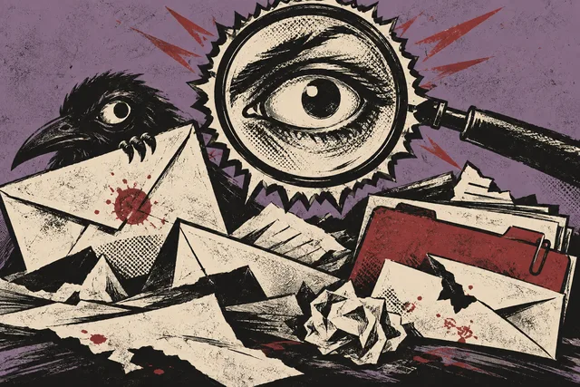

INCIDENT REPORT / AREVIEWED
FINDING
THE SIGNAL.
Security Analyst Intern
Clemson CSOC / Tier 2 Firewall Operations

The problem: phishing, brute-force logins, and hiding in ordinary activity.
↑ HOVER, FOCUS, OR TAP TO UNREDACT
9,000+security alerts investigated.
Not all of them false alarms.
Not all of them false alarms.
an alert is a question,
not an answer.
UNFOLD THE REPORT
- Investigated
- Suspicious activity across firewall, endpoint, and email logs.
- Work
- Triaged alerts and worked with analysts to identify phishing, brute-force attempts, and compromised credentials.
- Result
- Helped protect 25,000+ faculty and student accounts as part of the CSOC team.
- Equipment used
- Splunk / Microsoft Defender / Abnormal Security
SPLUNK / DEFENDER / ABNORMAL SECURITY